Soft and Biological Modelling @ CFisUC
We use physics and mathematics to simulate physical processes in complex biological systems.

biologicalmodelling.com
The Phase-Field Model¹
Different spatial domains are modeled as phases. The boundary creation/maintenance and interaction between the different domains is encoded into the Free Energy Functional. The dynamics of the system are obtained by minimising the Free Energy:
\[F[\phi_1, \phi_2, \cdots] = \int \text{d}^3r \sum_i \left(\frac{\varepsilon^2}{2}|\nabla \phi_i|^2 + V(\phi_1, \phi_2, \cdots)\right) + \sum_i \alpha_i (V[\phi_i]-V_o^i)^2
\]
\[\frac{\partial \phi_i}{\partial t} = - M \frac{\delta F[\phi_1, \phi_2, \cdots]}{\delta \phi_i}\]
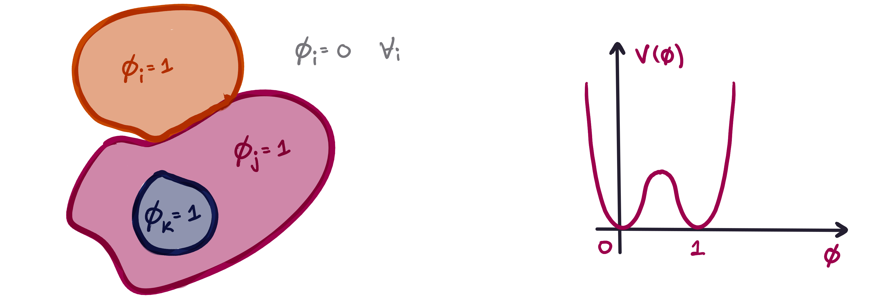
[1] Makiko Nonomura. “Study on Multicellular Systems Using a Phase Field Model”. In: PLOS ONE 7.4 (Apr. 2012), pp. 1–9
Active Matter and Molecular Dynamics
In my work, I am modelling the cytoskeleton of the cell as active brownian particles and active filaments. To that end, I perform simulations of molecular dynamics.
How do these structures - Mobility Induced Phase-Separations (MIPS) - emerge in the parameter space of:
\[
\begin{align}
\phi_P = N\frac{\pi \sigma_D^2}{4S} &&
\text{Pe} = \frac{Lv_\text{act}}{D} = \frac{\sigma_D F\text{act}}{k_B T}
\end{align}\]
To apply model the cytoskeleton in this framework:
- Generalise to 3D
- Couple to phase-field
- Generalise to filaments
[2] Pollard TD, Goldman RD. Overview of the Cytoskeleton from an Evolutionary Perspective. Cold Spring Harb Perspect Biol. 2018 Jul 2;10(7):a030288. Modelling the deformation and caging of endothelial cell nuclei in grooved substrates.
Colaborators:
Abdul Barakat (École Polytechnique)
Claire Leclech (École Polytechnique) Investigating the pitting of malaria infected
RBCs.
Colaborators:
Aurora Hernandez-Machado (Universitat de Barcelona)
Tomas Alarcón (CRM) Modelling the cytoskeleton of the cell as ABPs and active filaments.
Colaborators:
Giuseppe Negro (University of Edimburgh)
Giuseppe Gonella (Università degli Studi di Bari Aldo Moro)
[3] C. Leclech, et al., Micro-Scale Topography Triggers Dynamic 3D Nuclear Deformations. Adv. Sci. 2024, 2410052
[3] C. Leclech, et al., Micro-Scale Topography Triggers Dynamic 3D Nuclear Deformations. Adv. Sci. 2024, 2410052 What mechanisms drive nuclear caging and deformation?
Differentiating with respect to each of the fields yields the equations for the dynamics of the system. To keep the cell from splitting in high curvature and adhesion regimes.
[2] C. Leclech, et al., Micro-Scale Topography Triggers Dynamic 3D Nuclear Deformations. Adv. Sci. 2024, 2410052
Adapted from:
[3] Paulína Gálfiová et al., Biologia 64/6: 1242—1246, 2009
[4] Cancer Research UK
[5] medicoapps.org
[6] Elizalde-Torrent, A., Trejo-Soto, C., Méndez-Mora, L. et al. Pitting of malaria parasites in microfluidic devices mimicking spleen interendothelial slits. Sci Rep 11, 22099 (2021) What factors drive pitting?The cytoskeleton of the cell
This is a complex active structure of different kinds of proteic filaments that give cells their structure and mobility.

My Work
Let's get Groovy
Saving Humanity
Activity
Grooves
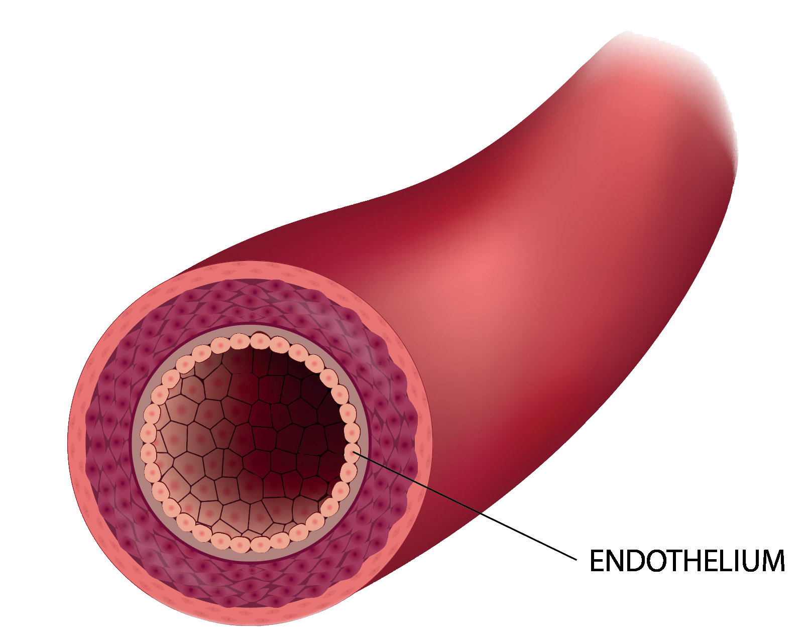
Grooves

Grooves
\[
\begin{align*}
&F[\phi, \nu, \psi] = \\
&=\int \overbrace{\kappa_0 \bigg(\underbrace{\frac{1}{4}\phi^2(1-\phi)^2 + {\frac{\kappa_1}{\kappa_0}}\frac{1}{4}\nu^2(1-\nu)^2}_{\text{Double well potential}} +\underbrace{ \frac{\varepsilon^2}{2}|\nabla \phi|^2+ {\frac{\kappa_1}{\kappa_0}}\frac{\varepsilon^2}{2}|\nabla \nu|^2}_\text{Interface maintenance penalty}}^\text{Surface terms} \bigg)d\mathbf{r}\\
&+ \int \kappa_0 \bigg(\underbrace{{\frac{\gamma}{\kappa_0}} h(\phi)h(\psi) + {\frac{\gamma}{\kappa_0}}h(1-\phi)h(\nu)}_{\text{Repulsion cell-substrate and nucleus-exterior}} +\underbrace{\frac{\eta}{\kappa_0}\nabla h(\phi)\cdot \nabla h(\psi)}_\text{Adhesion cell-substrate}\bigg)d\mathbf{r} \\
&+ \kappa_0 \bigg(\underbrace{\frac{\alpha}{\kappa_0}(V_{0,\phi} - V[\phi])^2 + \frac{\alpha}{\kappa_0}(V_{0,\nu} - V[\nu])^2}_\text{Volume conversation}\bigg)
\end{align*}
\]
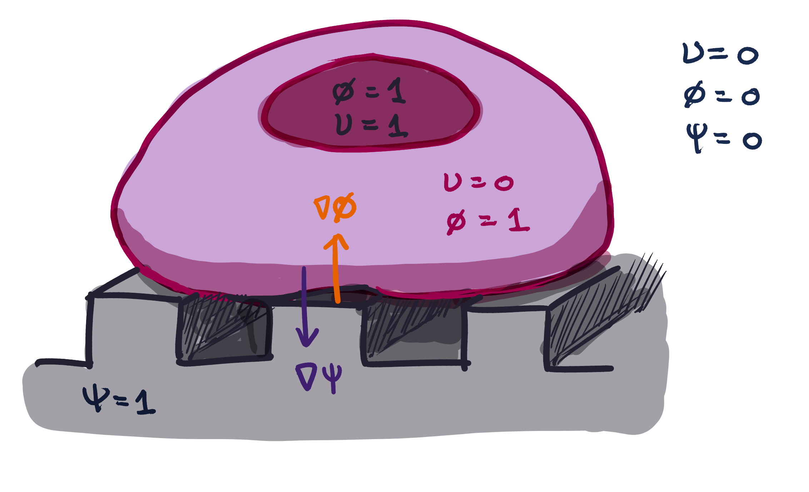
Grooves
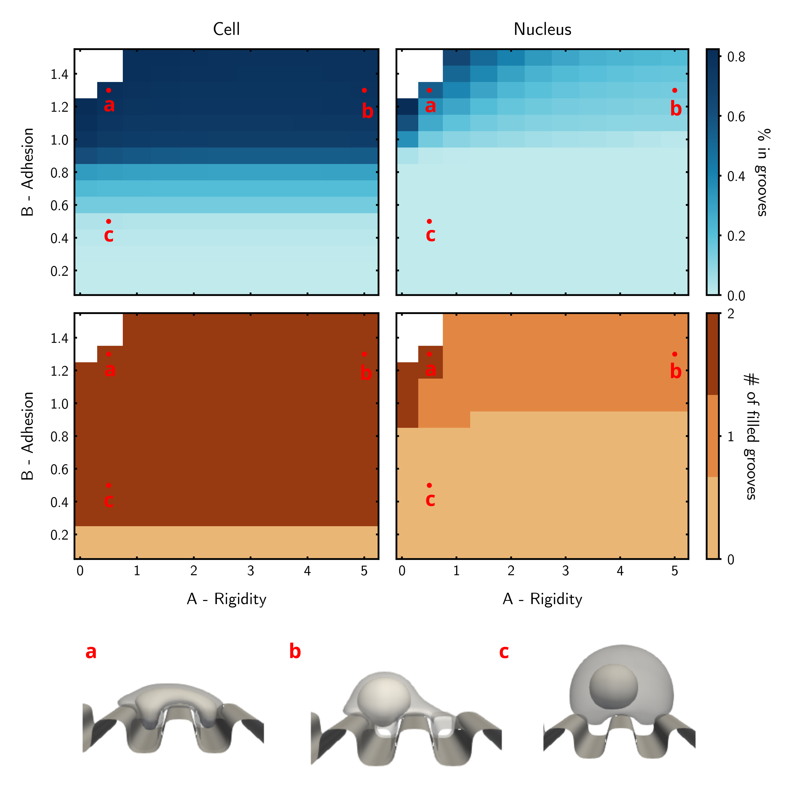
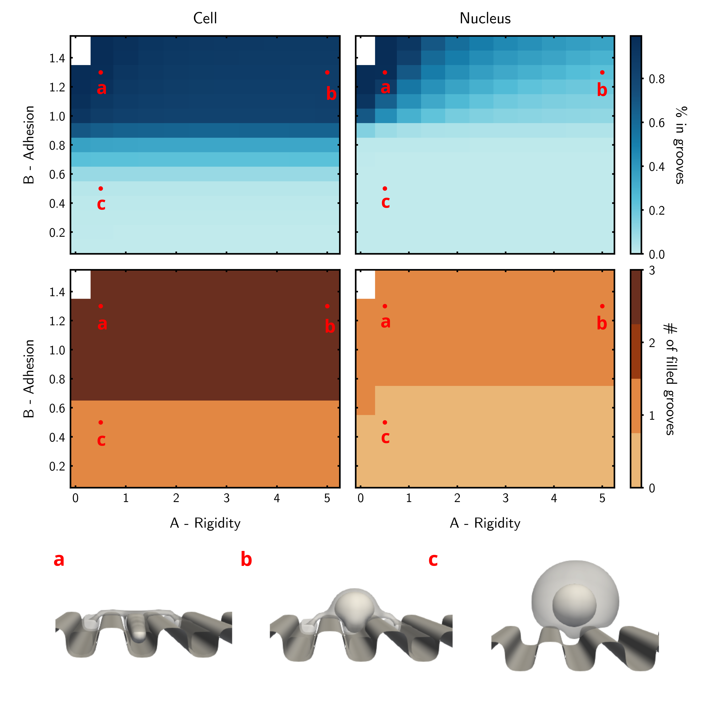
Grooves
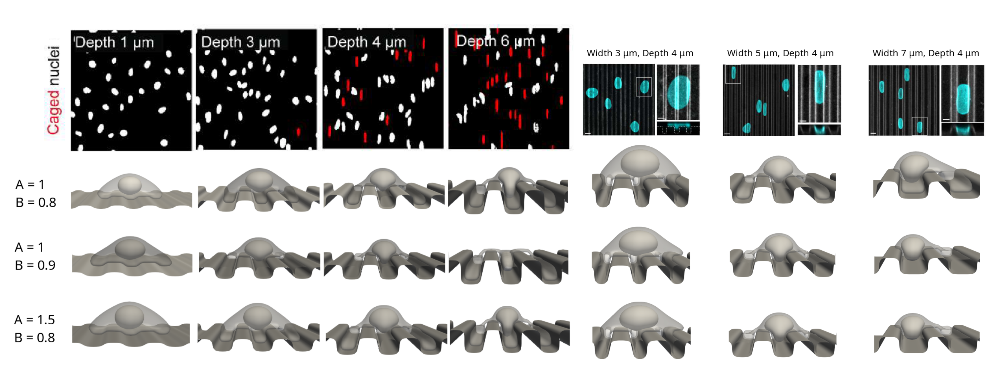
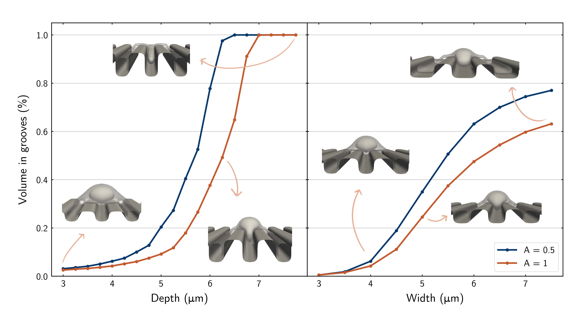
Pitting of Malaria Infected Red Blood Cells
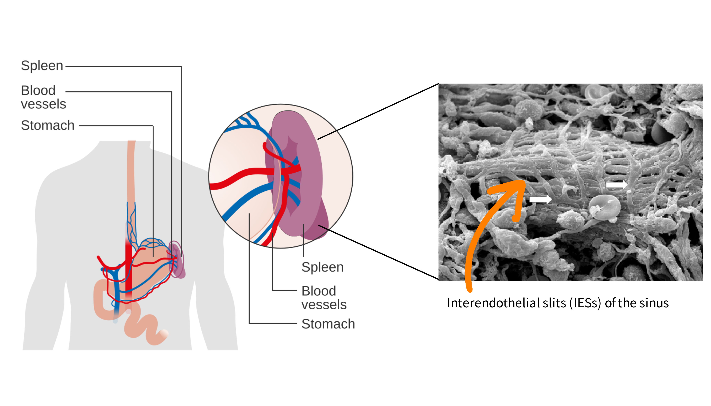
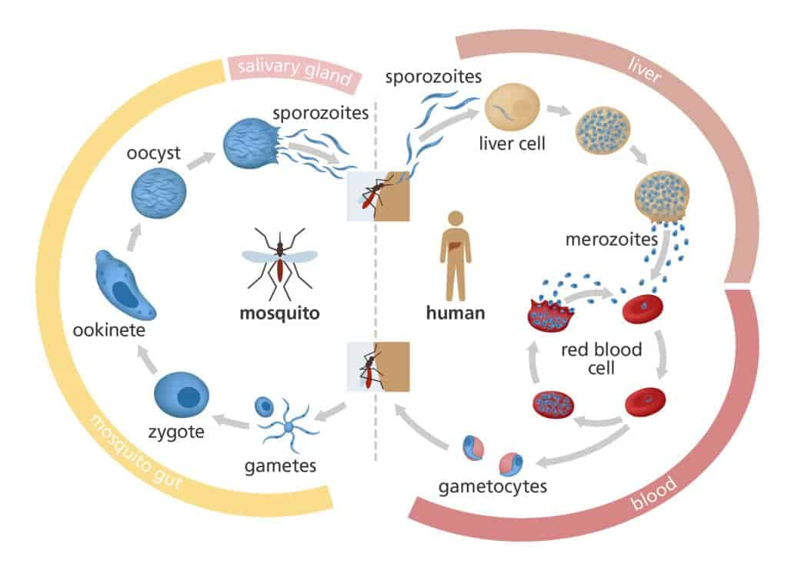
Pitting of Malaria Infected Red Blood Cells
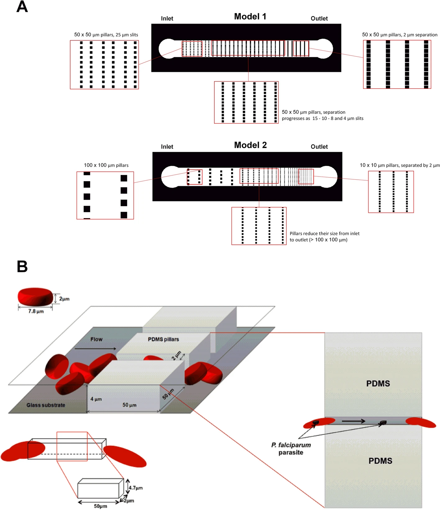
Pitting of Malaria Infected Red Blood Cells
\[\xrightarrow{\text{Increasing adhesion}}\]
Active Matter and Molecular Dynamics
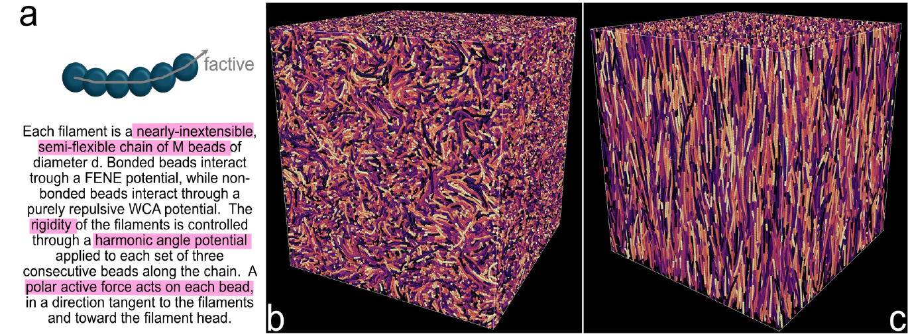
Next steps:
Questions?